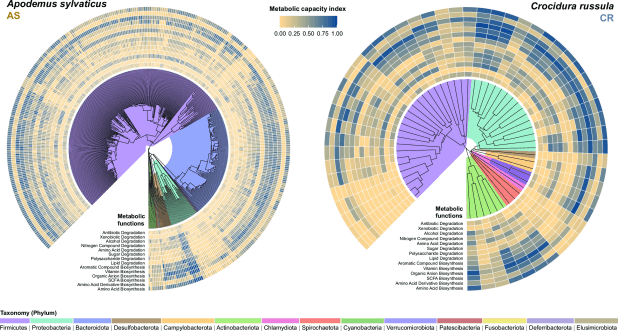
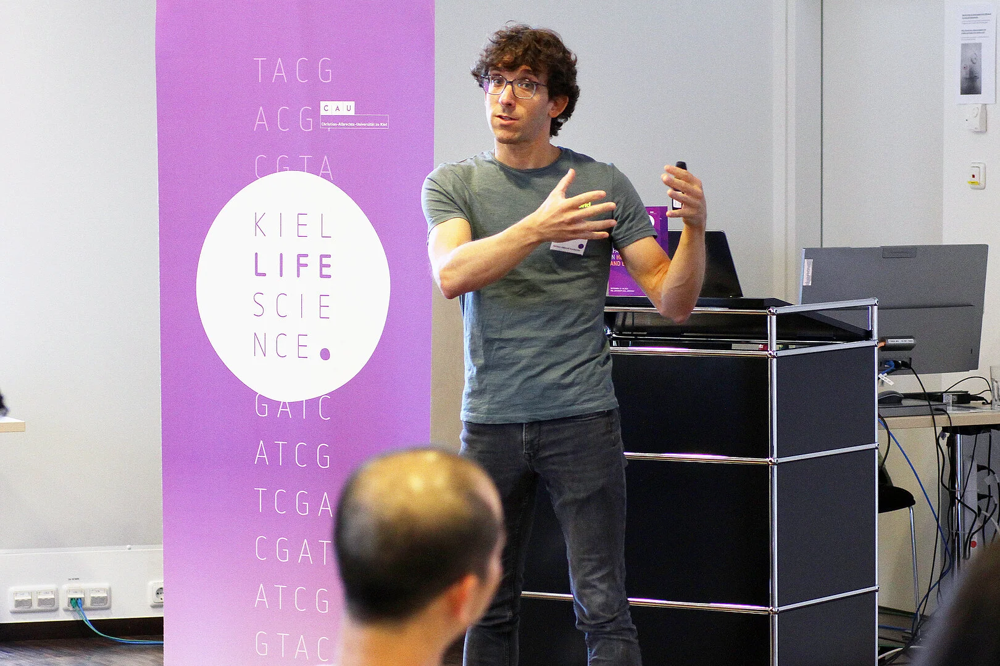

MSc course · 2025 edition
Host–microbiota multi-omics.
Generate and analyse multi-omic data to investigate interactions between animal hosts and their microbial communities.
Course details
Teaching / courses and workshops
Our courses grew from the methods we use in the lab: generating multi-omic data, analysing microbial communities and making complex results understandable.

Antton teaching at the Spatial Biology Summer School at Kiel · Photo: Christian Urban
MSc course · 2025 edition
Generate and analyse multi-omic data to investigate interactions between animal hosts and their microbial communities.
Course details
Since 2019
Courses and focused workshops taught by group members at Copenhagen and partner institutions.
A four-hour workshop for participants from MSc to postdoc level.
Invited lectures for the FishMed PhD programme.
A two-week PhD course introducing hologenomic concepts and workflows.
A four-hour workshop on best practices for clear, compelling publication figures.
An introduction to the hilldiv package for researchers in Evolutionary Genomics.
Hill numbers and their application in environmental DNA research.